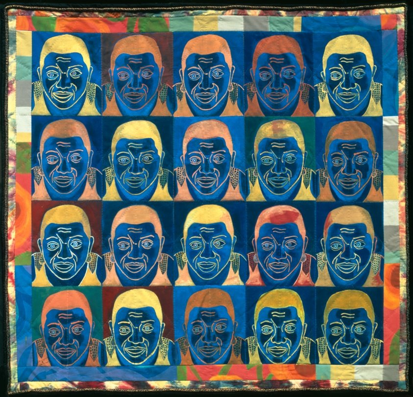

American Collection #5: Bessie's Blues
Faith Ringgold · 1997 · Cotton-, rayon-, nylon- and polyester-blend fabrics; acrylic paint · 195.4 × 201.3 cm · Art Institute of Chicago
In copyright. Look and learn: shown for study, not for download.
Bessie's Blues is the fifth of the eleven quilt paintings in Faith Ringgold's American Collection, finished in 1997; the Art Institute's record dates it to 19 January. It repeats the face of the singer Bessie Smith twenty times in a square grid, in the manner of Warhol's Marilyn Diptych. Unlike her earlier French Collection, these quilts carry no written story; Ringgold presented them as paintings by a fictional artist, Marlena Simone. The Art Institute bought it through ACA Galleries in 2002.